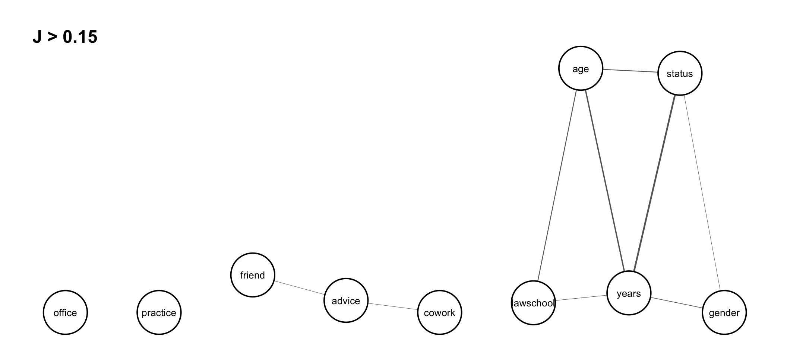

statistical entropy analysis of network data
2022-10-01
project summary
In multivariate statistics, there is an abundance of different measures of centrality and spread, many of which cannot be applied on variables measured on nominal or ordinal scale. Since network data in majority comprises such variables, alternative measures for analysing spread, flatness and association is needed. This is also of particular relevance given the special feature of interdependent observations in networks. In this presentation, multivariate entropy analysis is introduced and demonstrated as a general statistical method for finding, analysing and testing complicated dependence structures such as partial and conditional independencies, redundancies and functional dependencies. For example, consider the joint entropies of all pairs of variables which are used to construct a sequence of association graphs that represent variables by nodes and pairwise dependences above decreasing thresholds by links (cf. graphical models). By successively lowering the threshold from the maximum joint entropy to smaller occurring values, the sequence of graphs get more and more links. Connected components that are cliques represent dependent subsets of variables, and different components represent independent subsets of variables. Conditional independence between subsets of variables can be identified by omitting the subset corresponding to the conditioning variables. By comparing such graphs given different thresholds and with different components and cliques, specific structural models of multivariate dependence can be suggested and tested by divergence measures of goodness of fit. The roles of various entropy based measures are further highlighted and illustrated by applications on social network data. These applications show that important social phenomena and processes are often identified using these tools. The proposed framework is implemented in the R package ‘netropy’ and a description of various functions implemented in the package are given in the following. More details are provided in the package vignettes and the references listed.
r package
Package overview: netropy 


Installation
You can install the released version of netropy from CRAN with:
install.packages("netropy")The development version from GitHub with:
# install.packages("devtools")
devtools::install_github("termehs/netropy")library('netropy')Loading Internal Data
The different entropy tools are explained and illustrated by exploring data from a network study of a corporate law firm, which has previously been analysed by several authors (link). The data set is included in the package as a list with objects representing adjacency matrices for each of the three networks advice (directed), friendship (directed) and co-work (undirected), together with a data frame comprising 8 attributes on each of the 71 lawyers.
To load the data, extract each object and assign the correct names to them:
data(lawdata)
adj.advice <- lawdata[[1]]
adj.friend <- lawdata[[2]]
adj.cowork <-lawdata[[3]]
df.att <- lawdata[[4]]Variable Domains and Data Editing
A requirement for the applicability of these entropy tools is the specification of discrete variables with finite range spaces on the same domain: either node attributes/vertex variables, edges/dyad variables or triad variables. These can be either observed or transformed as shown in the following using the above example data set.
We have 8 vertex variables with 71 observations, two of which (years and age) are numerical and needs categorization based on their cumulative distributions. This categorization is in details described in the vignette “variable domains and data editing”. Here we just show the new dataframe created (note that variable senior is omitted as it only comprises unique values and that we edit all variable to start from 0):
att.var <-
data.frame(
status = df.att$status-1,
gender = df.att$gender,
office = df.att$office-1,
years = ifelse(df.att$years <= 3,0,
ifelse(df.att$years <= 13,1,2)),
age = ifelse(df.att$age <= 35,0,
ifelse(df.att$age <= 45,1,2)),
practice = df.att$practice,
lawschool= df.att$lawschool-1
)
head(att.var)
#> status gender office years age practice lawschool
#> 1 0 1 0 2 2 1 0
#> 2 0 1 0 2 2 0 0
#> 3 0 1 1 1 2 1 0
#> 4 0 1 0 2 2 0 2
#> 5 0 1 1 2 2 1 1
#> 6 0 1 1 2 2 1 0These vertex variables can be transformed into dyad variables by using the function get_dyad_var(). Observed node attributes in the dataframe att_var are then transformed into pairs of individual attributes. For example, status with binary outcomes is transformed into dyads having 4 possible outcomes (0,0), (0,1), (1,0), (1,1):
dyad.status <- get_dyad_var(att.var$status, type = 'att')
dyad.gender <- get_dyad_var(att.var$gender, type = 'att')
dyad.office <- get_dyad_var(att.var$office, type = 'att')
dyad.years <- get_dyad_var(att.var$years, type = 'att')
dyad.age <- get_dyad_var(att.var$age, type = 'att')
dyad.practice <- get_dyad_var(att.var$practice, type = 'att')
dyad.lawschool <- get_dyad_var(att.var$lawschool, type = 'att')Similarly, dyad variables can be created based on observed ties. For the undirected edges, we use indicator variables read directly from the adjacency matrix for the dyad in question, while for the directed ones (advice and friendship) we have pairs of indicators representing sending and receiving ties with 4 possible outcomes :
dyad.cwk <- get_dyad_var(adj.cowork, type = 'tie')
dyad.adv <- get_dyad_var(adj.advice, type = 'tie')
dyad.frn <- get_dyad_var(adj.friend, type = 'tie')All 10 dyad variables are merged into one data frame for subsequent entropy analysis:
dyad.var <-
data.frame(cbind(status = dyad.status$var,
gender = dyad.gender$var,
office = dyad.office$var,
years = dyad.years$var,
age = dyad.age$var,
practice = dyad.practice$var,
lawschool = dyad.lawschool$var,
cowork = dyad.cwk$var,
advice = dyad.adv$var,
friend = dyad.frn$var)
)
head(dyad.var)
#> status gender office years age practice lawschool cowork advice friend
#> 1 3 3 0 8 8 1 0 0 3 2
#> 2 3 3 3 5 8 3 0 0 0 0
#> 3 3 3 3 5 8 2 0 0 1 0
#> 4 3 3 0 8 8 1 6 0 1 2
#> 5 3 3 0 8 8 0 6 0 1 1
#> 6 3 3 1 7 8 1 6 0 1 1A similar function get_triad_var() is implemented for transforming vertex variables and different relation types into triad variables. This is described in more detail in the vignette “variable domains and data editing”.
Univariate, Bivariate and Trivariate Entropies
The function entropy_bivar() computes the bivariate entropies of all pairs of variables in the dataframe. The output is given as an upper triangular matrix with cells giving the bivariate entropies of row and column variables. The diagonal thus gives the univariate entropies for each variable in the dataframe:
H2 <- entropy_bivar(dyad.var)
H2
#> status gender office years age practice lawschool cowork advice
#> status 1.493 2.868 3.640 3.370 3.912 3.453 4.363 2.092 2.687
#> gender NA 1.547 3.758 3.939 4.274 3.506 4.439 2.158 2.785
#> office NA NA 2.239 4.828 4.901 4.154 5.058 2.792 3.388
#> years NA NA NA 2.671 4.857 4.582 5.422 3.268 3.868
#> age NA NA NA NA 2.801 4.743 5.347 3.411 4.028
#> practice NA NA NA NA NA 1.962 4.880 2.530 3.127
#> lawschool NA NA NA NA NA NA 2.953 3.567 4.186
#> cowork NA NA NA NA NA NA NA 0.615 1.687
#> advice NA NA NA NA NA NA NA NA 1.248
#> friend NA NA NA NA NA NA NA NA NA
#> friend
#> status 2.324
#> gender 2.415
#> office 3.044
#> years 3.483
#> age 3.637
#> practice 2.831
#> lawschool 3.812
#> cowork 1.456
#> advice 1.953
#> friend 0.881Bivariate entropies can be used to detect redundant variables that should be omitted from the dataframe for further analysis. This occurs when the univariate entropy for a variable is equal to the bivariate entropies for pairs including that variable. As seen above, the dataframe dyad.var has no redundant variables. This can also be checked using the function redundancy() which yields a binary matrix as output indicating which row and column variables are hold the same information:
redundancy(dyad.var)
#> no redundant variables
#> NULLMore examples of using the function redundancy() is given in the vignette “univariate bivariate and trivariate entropies”.
Trivariate entropies can be computed using the function entropy_trivar() which returns a dataframe with the first three columns representing possible triples of variables V1,V2, and V3 from the dataframe in question, and their entropies H(V1,V2,V3) as the fourth column. We illustrated this on the dataframe dyad.var:
H3 <- entropy_trivar(dyad.var)
head(H3, 10) # view first 10 rows of dataframe
#> V1 V2 V3 H(V1,V2,V3)
#> 1 status gender office 4.938
#> 2 status gender years 4.609
#> 3 status gender age 5.129
#> 4 status gender practice 4.810
#> 5 status gender lawschool 5.664
#> 6 status gender cowork 3.464
#> 7 status gender advice 4.048
#> 8 status gender friend 3.685
#> 9 status office years 5.321
#> 10 status office age 5.721Joint Entropy and Association Graphs
Joint entropies is a non-negative measure of association among pairs of variables. It is equal to 0 if and only if two variables are completely independent of each other.
The function joint_entropy() computes the joint entropies between all pairs of variables in a given dataframe and returns a list consisting of the upper triangular joint entropy matrix (univariate entropies in the diagonal) and a dataframe giving the frequency distributions of unique joint entropy values. A function argument specifies the precision given in number of decimals for which the frequency distribution of unique entropy values is created (default is 3). Applying the function on the dataframe dyad.var with two decimals:
J <- joint_entropy(dyad.var, 2)
J$matrix
#> status gender office years age practice lawschool cowork advice
#> status 1.49 0.17 0.09 0.79 0.38 0.00 0.08 0.02 0.05
#> gender NA 1.55 0.03 0.28 0.07 0.00 0.06 0.00 0.01
#> office NA NA 2.24 0.08 0.14 0.05 0.13 0.06 0.10
#> years NA NA NA 2.67 0.61 0.05 0.20 0.02 0.05
#> age NA NA NA NA 2.80 0.02 0.41 0.01 0.02
#> practice NA NA NA NA NA 1.96 0.04 0.05 0.08
#> lawschool NA NA NA NA NA NA 2.95 0.00 0.01
#> cowork NA NA NA NA NA NA NA 0.62 0.18
#> advice NA NA NA NA NA NA NA NA 1.25
#> friend NA NA NA NA NA NA NA NA NA
#> friend
#> status 0.05
#> gender 0.01
#> office 0.08
#> years 0.07
#> age 0.05
#> practice 0.01
#> lawschool 0.02
#> cowork 0.04
#> advice 0.18
#> friend 0.88
J$freq
#> j #(J = j) #(J >= j)
#> 1 0.79 1 1
#> 2 0.61 1 2
#> 3 0.41 1 3
#> 4 0.38 1 4
#> 5 0.28 1 5
#> 6 0.2 1 6
#> 7 0.18 2 8
#> 8 0.17 1 9
#> 9 0.14 1 10
#> 10 0.13 1 11
#> 11 0.1 1 12
#> 12 0.09 1 13
#> 13 0.08 4 17
#> 14 0.07 2 19
#> 15 0.06 2 21
#> 16 0.05 7 28
#> 17 0.04 2 30
#> 18 0.03 1 31
#> 19 0.02 5 36
#> 20 0.01 5 41
#> 21 0 4 45As seen, the strongest association is between the variables status and years with joint entropy values of 0.79. We have independence (joint entropy value of 0) between two pairs of variables: (status,practice), (practise,gender), (cowork,gender),and (cowork,lawschool).
These results can be illustrated in a association graph using the function assoc_graph() which returns a ggraph object in which nodes represent variables and links represent strength of association (thicker links indicate stronger dependence). To use the function we need to load the ggraph library and to determine a threshold which the graph drawn is based on. We set it to 0.15 so that we only visualize the strongest associations
library(ggraph)
assoc_graph(dyad.var, 0.15)
Given this threshold, we see isolated and disconnected nodes representing independent variables. We note strong dependence between the three dyadic variables status,years and age, but also a somewhat strong dependence among the three variables lawschool, years and age, and the three variables status, years and gender. The association graph can also be interpreted as a tendency for relations cowork and friend to be independent conditionally on relation advice, that is, any dependence between dyad variables cowork and friend is explained by advice.
A threshold that gives a graph with reasonably many small independent or conditionally independent subsets of variables can be considered to represent a multivariate model for further testing.
More details and examples of joint entropies and association graphs are given in the vignette “joint entropies and association graphs”.
Prediction Power Based on Expected Conditional Entropies
The function prediction_power() computes prediction power when pairs of variables in a given dataframe are used to predict a third variable from the same dataframe. The variable to be predicted and the dataframe in which this variable also is part of is given as input arguments, and the output is an upper triangular matrix giving the expected conditional entropies of pairs of row and column variables (denoted X and Y) of the matrix, i.e. EH(Z|X,Y) where Z is the variable to be predicted. The diagonal gives EH(Z|X) , that is when only one variable as a predictor. Note that NA’s are in the row and column representing the variable being predicted.
Assume we are interested in predicting variable status (that is whether a lawyer in the data set is an associate or partner). This is done by running the following syntax
prediction_power('status', dyad.var)
#> status gender office years age practice lawschool cowork advice
#> status NA NA NA NA NA NA NA NA NA
#> gender NA 1.375 1.180 0.670 0.855 1.304 1.225 1.306 1.263
#> office NA NA 2.147 0.493 0.820 1.374 1.245 1.373 1.325
#> years NA NA NA 2.265 0.573 0.682 0.554 0.691 0.667
#> age NA NA NA NA 1.877 1.089 0.958 1.087 1.052
#> practice NA NA NA NA NA 2.446 1.388 1.459 1.410
#> lawschool NA NA NA NA NA NA 3.335 1.390 1.337
#> cowork NA NA NA NA NA NA NA 2.419 1.400
#> advice NA NA NA NA NA NA NA NA 2.781
#> friend NA NA NA NA NA NA NA NA NA
#> friend
#> status NA
#> gender 1.270
#> office 1.334
#> years 0.684
#> age 1.058
#> practice 1.427
#> lawschool 1.350
#> cowork 1.411
#> advice 1.407
#> friend 3.408For better readability, the powers of different predictors can be conveniently compared by using prediction plots that display a color matrix with rows for X and columns for Y with darker colors in the cells when we have higher prediction power for Z. This is shown for the prediction of status:

Obviously, the darkest color is obtained when the variable to be predicted is included among the predictors, and the cells exhibit prediction power for a single predictor on the diagonal and for two predictors symmetrically outside the diagonal. Some findings are as follows: good predictors for status are given by years in combination with any other variable, and age in combination with any other variable. The best sole predictor is gender.
More details and examples of expected conditional entropies and prediction power are given in the vignette “prediction power based on expected conditional entropies”.
References
Parts of the theoretical background is provided in the package vignettes, but for more details, consult the following literature:
Frank, O., & Shafie, T. (2016). Multivariate entropy analysis of network data. Bulletin of Sociological Methodology/Bulletin de Méthodologie Sociologique, 129(1), 45-63. link
Nowicki, K., Shafie, T., & Frank, O. (Forthcoming). Statistical Entropy Analysis of Network Data.